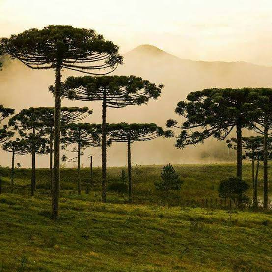
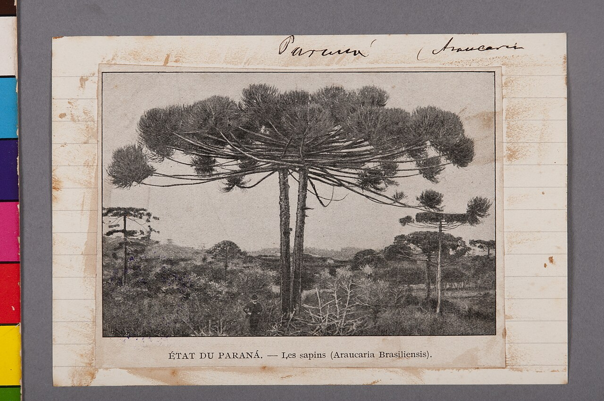
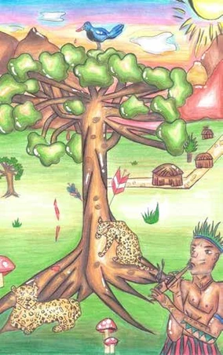

As araucárias do Paraná
Este site fala sobre as araucárias do Paraná, mostrando suas características, sua importância para a natureza e sua presença no estado. A araucária também faz parte da cultura paranaense e aparece em pinturas, fotos, artesanatos e outras formas de arte, sendo um dos principais símbolos da identidade do Paraná.

A História da araucária do Paraná
As araucárias são nativas do Sul do Brasil e já faziam parte do Paraná antes da chegada dos europeus. Povos indígenas, como os Kaingang e Guarani, já usavam o pinhão como alimento. Com o tempo, a madeira das araucárias começou a ser muito explorada, principalmente entre o final do século XIX e o século XX. Isso fez com que grande parte das florestas fosse destruída. Hoje, existem ações para proteger a espécie, que se tornou um dos principais símbolos do Paraná.

A Araucária na Arte e na Cultura do Paraná
A araucária é um dos principais símbolos do Paraná e representa a natureza e a identidade do estado. Ela aparece em pinturas, fotografias, artesanatos e outras formas de arte, inspirando artistas com seu formato e sua presença nas paisagens paranaenses. Além disso, o pinhão faz parte da cultura e da culinária local, sendo muito presente nas festas e tradições do estado. Atualmente, as araucárias podem ser encontradas principalmente em áreas de preservação e regiões do interior do Paraná, sendo também representadas em obras de arte, espaços públicos e símbolos culturais.

Curiosidades
Curiosidades
A araucária é um dos símbolos do Paraná. Produz o famoso pinhão, que é uma semente, não um fruto. A gralha-azul ajuda a espalhar suas sementes. Pode passar de 30 metros e viver por mais de 200 anos. É adaptada ao clima frio e às regiões de altitude. Está ameaçada de extinção e precisa ser preservada.